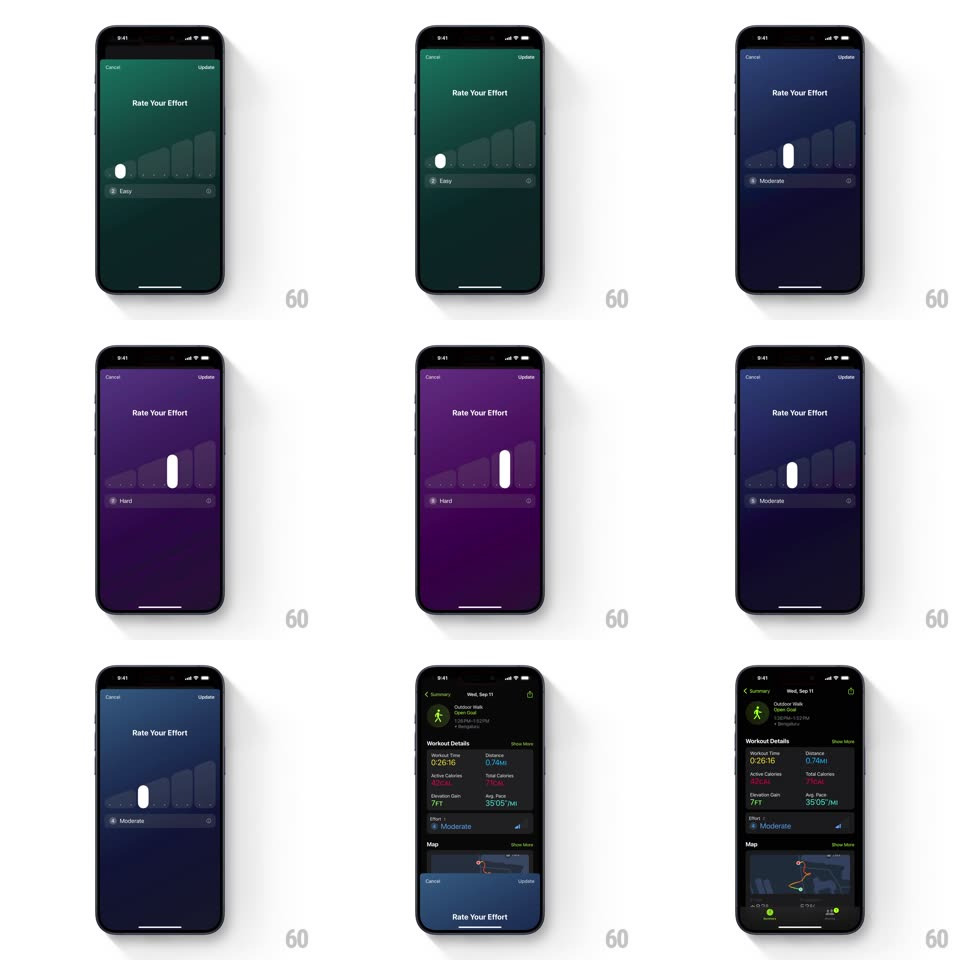

Media
Frame-by-frame

Rebuild this interaction 1:1: the iPhone Fitness "Rate Your Effort" sheet - a full-screen dark sheet whose background floods through a green-to-purple color ramp as the user drags a white handle along a horizontal track of ascending bars, with a bottom label pill updating between "Easy", "Moderate", and "Hard".

Rebuild this interaction 1:1: the iPhone Fitness "Rate Your Effort" sheet - a full-screen dark sheet whose background floods through a green-to-purple color ramp as the user drags a white handle along a horizontal track of ascending bars, with a bottom label pill updating between "Easy", "Moderate", and "Hard". ## Integration Integration: stack-agnostic spec - springs given as stiffness/damping, timed motions as duration + curve; map every value to your framework and animation library of choice. ## Scene Workout summary (Outdoor Walk, metrics grid, map). Tapping Effort opens the sheet: "Rate Your Effort" title, Cancel/Update top corners, a faint ascending bar-graph silhouette filling the middle, a white capsule handle riding the track, and a bottom pill showing "N Label" with +/- steppers. ## Motion spec Pattern: full-bleed color-coupled horizontal slider. - Drag: the handle tracks 1:1 along the track; the whole background tweens continuously through the ramp (green at Easy -> teal -> blue -> purple at Hard) with the bar-graph silhouette picking up the tint. - Bars beneath the handle scale up slightly as it passes (~1.15x, 150ms, settling 200ms). - The bottom pill updates number + label per detent (crossfade 150ms); +/- steppers nudge the handle one detent with a spring (~400/26, 200ms). - Release: handle snaps to nearest detent (spring ~420/28). Update: sheet slides down (300ms) and the summary Effort row shows the choice tinted to match. ## Calibration - Background color is continuous with handle position - not snapped to detents. - Labels map to ranges (1-3 Easy, 4-6 Moderate, 7-9 Hard, 10 All Out); number is exact, label is bucketed. ## Reduced motion Handle steps without bounce; background color crossfades between detent colors (150ms). ## Don't miss - The bar-graph silhouette is ascending left-to-right - it is the scale, not decoration. - The sheet covers the summary fully; the map and metrics are not visible underneath.